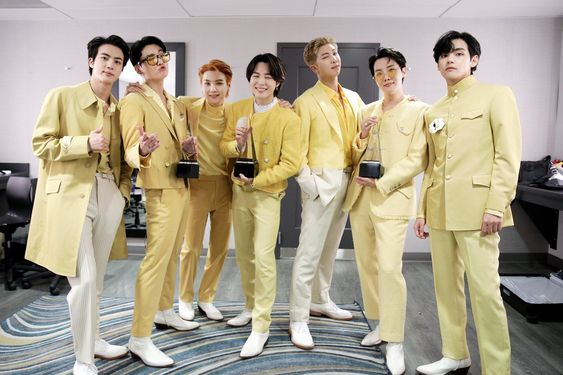
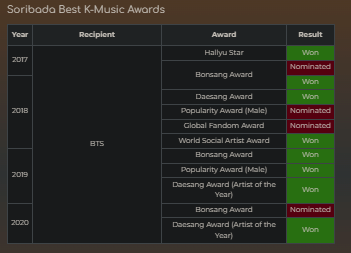

SONGS AND AWARDS
SONGS AND AWARDS
ALBUMS & SONGS
With the number of songs and albums that BTS has released in the years following its establishment it is only obvious that many are not clear with regard to BTS Albums In Order 2013 To 2021 and how many albums does BTS have. BTS has released a number of albums in their active years. BTS has released around 35 albums over the years.
BTS ALL ALBUMS IN ORDER~RELEASE DATE
2 Cool 4 Skool~June 12, 2013
Intro: 2 Cool 4 Skool (feat. DJ Friz), We Are Bulletproof Pt.2, Skit: Circle Room Talk, No More Dream, Interlude, I Like It, Outro: Circle Room Cypher, Hidden Track: Skit: On The Start Line, Hidden Track: Road/Path
O!RUL8,2?~September 11, 2013
Intro: O!RUL8,2?, N.O, We On, Skit: R U Happy Now?, If I Ruled The World, Coffee, BTS Cypher Pt.1, Attack on Bangtan, Paldo Gangsan/Satoori Rap, OUTRO : Luv In Skool
Skool Luv Affair~February 12, 2014
Intro: Skool Luv Affair, Boy In Luv, Skit: Soulmate, Where Did You Come From, Just One Day, Tomorrow, BTS Cypher Pt.2: Triptych, Spine Breaker, Jump, Outro: Propose
Skool Luv Affair: Special Addition~May 13, 2014
Miss Right, I Like It (Slow Jam Remix), Intro : Skool Luv Affair, Boy In Luv, Skit: Soulmate, Where Did You Come From, Just One Day, Tomorrow, BTS Cypher Pt.2: Triptych, Spine Breaker, Jump, Outro: Propose
No More Dream (Japanese album)~June 4, 2014
No More Dream (Japanese Ver.), (I Like It!) (Japanese Ver.), (The Rise of Bangtan) (Japanese Ver.)
BOY IN LUV (Japanese album)~July 16, 2014
BOY IN LUV (Japanese Ver.), N.O (Japanese Ver.), Just One Day (Japanese Ver.)
Dark & Wild~August 19, 2014
Intro: What am I to You, Danger, War Of Hormone, Hip Hop Lover / Phile, LET ME KNOW, Rain, BTS Cypher, Pt. 3: KILLER ft. Supreme Boi, Interlude: What Are You Doing , Could You Turn Off Your Cell Phone?, Blanket Kick/Embarrassed, 24/7=heaven, Look here, Second Grade, Outro: Does That Make Sense?
Danger (Japanese album)~November 19, 2014
Danger (Japanese Ver.), (The Rise of Bangtan – SONPUB REMIX) (Japanese Ver.) Miss Right (Japanese Ver.)
Wake Up (Japanese album)~December 24, 2014
1INTRO, THE STAS, JUMP (Japanese Ver.), Danger (Japanese Ver.), BOY IN LUV (Japanese Ver.), Just One Day -Japanese Ver. Extended-, (I Like It!) – Japanese Ver.-, I Like It Pt.2 ~In That Place~ Pt.2, No More Dream (Japanese Ver.), (The Rise of Bangtan) (Japanese Ver.), N.O (Japanese Ver.), Wake Up, OUTRO
The Most Beautiful Moment In Life Pt.1~April 29, 2015
Intro: Blooming Youth, I NEED U, Hold Me Tight Skit: Expectation!, DOPE, Boyz With Fun, Converse High, Moving On, Outro: Love is Not Ove
FOR YOU (Japanese album)~June 17, 2015
FOR YOU, War of Hormone (Japanese Ver.) Lyrics, Let Me Know (Japanese Ver.) Lyrics
The Most Beautiful Moment In Life Pt.2~November 30, 2015
INTRO: Never Mind, RUN, Butterfly, Whalien 52, Ma City, Crow-Tit/Baepsae, SKIT: One Night In A Strange City, Dead Leaves, OUTRO: House Of Cards
I NEED U (Japanese album)~December 8, 2015
I NEED U (Japanese Ver.), DOPE (Japanese Ver.), (Boyz With Fun) (Japanese Ver.)
RUN (Japanese album)~March 15, 2016
RUN (Japanese Ver.), Butterfly (Japanese Ver.), Good Day
The Most Beautiful Moment In Life: Young Forever~May 2, 2016
Intro: Blooming Youth, I NEED U, Hold Me Tight, Butterfly (Prologue Mix), Ma City, Crow-Tit/Baepsae, DOPE, FIRE, Save Me, EPILOGUE: Young Forever, Converse High, Moving On, Whalien 52, Butterfly, House Of Cards (Full Length Edition), Love Is Not Over (Full Length Edition), I NEED U (Urban Mix), I NEED U (Remix), RUN (Ballad Mix), RUN (Alternative Mix), Butterfly (Alternative Mix)
Youth (Japanese album)~September 7, 2016
Introduction: Youth, FIRE (Japanese Ver.), RUN (Japanese Ver.), DOPE (Japanese Ver.), Good Day, Save Me (Japanese Ver.), Boyz With Fun (Japanese Ver.), Baepsae (Japanese Ver.), Wishing On a Star, Butterfly (Japanese Ver.), FOR YOU, I NEED U (Japanese Ver.), EPILOGUE : Young Forever (Japanese Ver.)
WINGS~October 10, 2016
Intro: Boy Meets Evil, Blood Sweat & Tears, Begin Lie, Stigma, First Love, Reflection, MAMA, Awake, Lost, BTS Cypher 4, Am I Wrong, 21st Century Girl 21, Two! Three! (Hoping for Better Days) , Interlude: Wings
You Never Walk Alone~February 13, 2017
Intro: Boy Meets Evil, Blood Sweat & Tears, Begin, Lie, Stigma, First Love, REFLECTION, MAMA, Awake, Lost, BTS Cypher 4Am I Wrong ,21st Century Girls 21, Two! Three! (Hoping for Better Days) , Spring Day, Not Today, Outro : WINGS, A Supplementary Story: You Never Walk Alone
Blood Sweat & Tears (Japanese Album)~May 10, 2017
(Japanese Ver.), Not Today (Japanese Ver.), Spring Day (Japanese Ver.)
Love Yourself: Her~September 18, 2017
Intro: Serendipity, DNA, Best Of Me, Dimple, Pied Piper, Skit: Billboard Music Awards Speech, MIC Drop, Go/Go Go, Outro: Her, Skit: Hesitation and Fear, Sea
MIC DROP / DNA / CRYSTAL SNOW (Japanese album)~December 6, 2017
MIC DROP (Japanese Ver.) ,DNA (Japanese Ver.), CRYSTAL SNOW
Face Yourself (Japanese album)~April 4, 2018
INTRO: Ringwanderung, Best of Me (Japanese Ver.), (Blood, Sweat & Tears) (Japanese Ver.), DNA (Japanese Ver.), Not Today (Japanese Ver.), MIC Drop (Japanese Version), Don’t Leave Me, Go Go (Japanese Ver.), Crystal Snow, Spring Day (Japanese Ver.), Let Go, OUTRO : Crack
Love Yourself: Tear~May 18, 2018
Intro: Singularity, Fake Love, The Truth Untold, 134340, Paradise, Love Maze, Magic Shop, Airplane Pt. 2, Anpanman, So What, Outro: Tear
Love Yourself: Answer~August 24, 2018
CD A
Euphoria, Trivia: Just Dance,Serendipity (Full Length Edition), DNA, Dimple, Trivia : Love, Her, Singularity, FAKE LOVE The Truth Untold (Ft. Steve Aoki), Trivia : Seesaw, Tear, Epiphany, I’m Fine, IDOL,Answer: Love Myself
CD B
Magic Shop, Best of Me, Airplane pt.2, Go/Go Go, Anpanman, MIC Drop, DNA (Pedal 2 LA Mix), FAKE LOVE (Rocking Vibe Mix), MIC Drop [Steve Aoki Remix] (Full Length Edition), IDOL (Remix) (Ft. Nicki Minaj)
FAKE LOVE/Airplane Pt.2 (Japanese Album)~November 7, 2018
1FAKE LOVE (Japanese Ver.), Airplane Pt.2 (Japanese Ver.), IDOL (Stadium Remix), FAKE LOVE (Japanese Ver.) (Remix)
Map of the Soul: Persona~April 12, 2019
Intro: Persona, (Boy With Luv) feat. Halsey, (Mikrokosmos), Make It Right, HOME, Jamais Vu, Dionysus
BTS World Original Soundtrack~June 28, 2019
Original Soundtrack
Lights/Boy With Luv (Japanese album)~July 3, 2019
Lights, Boy With Luv (Japanese Ver.), IDOL (Japanese Ver.)
Map of the Soul: 7~February 21, 2020
1Intro: Persona, Boy With Luv (Feat. Halsey),. Make It Right, Jamais Vu, Dionysus, Interlude: Shadow, Black Swan, Filter, Louder than bombs, ON, UGH!, 00:00 (Zero O’Clock), Inner Child, Friends, Moon, Respect, We are Bulletproof: the Eternal, Outro: Ego, ON (Feat. Sia)
Map of the Soul 7: The Journey (Japanese album)~July 14, 2020
INTRO: Calling, Stay Gold, Boy With Luv (Japanese version), Make It Right (Japanese version), Dionysus (Japanese version), IDOL (Japanese version), Airplane pt.2 (Japanese version), FAKE LOVE (Japanese version), Black Swan (Japanese version), ON (Japanese version), Lights, Your Eyes Tell, OUTRO: The Journey
“Dynamite”~August 20, 2020
Digital Single
BE~November 20, 2020
Life Goes On, Fly To My Room, Blue & Grey, Skit, Telepathy, Dis-ease, Stay, Dynamite
“Film Out”~April 2, 2021
Japanese Digital Single
“Butter”~May 21, 2021
Single
“Permission To Dance”~July 8, 2021
Single
AWARDS & ACHIEVEMENTS



LEAVE A COMMENT